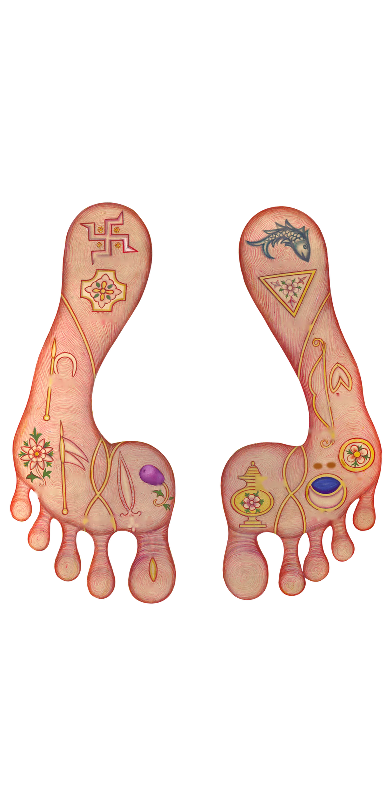

ચિહ્ન 0/52
તિલ 0/63
20



⏱ 0:00
ચિહ્ન
તિલ

ફક્ત રંગ બદલાય છે, મૂર્તિ બિલકુલ એ જ રહે છે.
ધૂન રમત દરમિયાન પણ ચાલુ રહે છે અને રમતના અવાજ સાથે મળીને વાગે છે. બંધ કરવા અહીં ⏸ દબાવો.
સરળ: 3-3 નામ, 25 સેકન્ડ, 5 હિન્ટ · મધ્યમ: 5-5, 20 સેકન્ડ, 3 હિન્ટ · અઘરું: 8-8, 15 સેકન્ડ, 1 હિન્ટ · પૂર્ણ: બધા નામ, કોઈ હિન્ટ નહીં.
આડી સ્ક્રીનમાં મૂર્તિ ડાબી બાજુ અને નામ-પેટી જમણી બાજુ મોટા અક્ષરે દેખાય છે. "ઓટો" માં ફોન/કમ્પ્યુટર આડું કરો તો આપોઆપ બદલાય છે.
બધું ધીરે ધીરે વાંચો, પછી નીચે ધ્યાન કરો દબાવો.
નિજાત્માનં બ્રહ્મરૂપં દેહત્રય વિલક્ષણમ્ |
વિભાવ્ય તેને કર્તવ્યા ભક્તિઃ કૃષ્ણસ્ય સર્વદા ||
શ્રીજી મહારાજના બંને ચરણારવિંદના તળા રક્ત (લાલ-ગુલાબી) છે, અંગૂઠા અને આંગળીઓના નખ ઉપડતા, તેજસ્વી અને રક્ત છે તથા તેના પર કોમળ ઝીણા રોમ છે. બંને ચરણમાં અંગૂઠા પાસેની આંગળીઓની બંને કોરેથી નીકળીને પાની તરફ જતી ઉર્ધ્વરેખા વિરાજમાન છે.
શ્રી સહજાનંદ સ્વામી મહારાજની દિવ્ય મૂર્તિ અતિશય રૂપ, અનંત સૌંદર્ય અને પરમ માધુર્યથી સંપન્ન છે. આપશ્રીની મૂર્તિ પુષ્ટ, અત્યંત શોભાયમાન, શાંત સ્વભાવથી યુક્ત અને શ્યામ (ઘનશ્યામ) વર્ણની છે. જે કોઈ ભાગ્યશાળી ભક્તજન આ મનોહર મૂર્તિના દર્શન કરે છે, તેના મન અને નેત્રને તે ક્ષણવારમાં હરી લે છે.
તેજોમંડલ મધ્યસ્થં કોટિકંદર્પસુંદરમ્ |
નવીનનીરદશ્યામં શ્રીકૃષ્ણં ચિન્તયામ્યહમ્ ||
નાથ રહો મારા નેણમાં, આવા ને આવા માવા;
તન-મન જાવું વારણે, તમ ઉપર માવા.
અને શ્રીજીમહારાજ પોતે જ્યાં જ્યાં વિચર્યા ત્યાં ત્યાં રહ્યા જે પોતાના ભક્તજન તેમની આગળ વર્ણાશ્રમનો ધર્મ તથા આત્મજ્ઞાન તથા વૈરાગ્ય તથા પોતાના સ્વરૂપનું જ્ઞાન તથા પોતાના માહાત્મ્યે સહિત ભક્તિ એમના જે બહુ પ્રકારના ભેદ તેમને વિસ્તારે કરીને યથાર્થપણે કહેતા હવા. એવી રીતે નિત્ય પ્રત્યે પોતાના ભક્તજનને આનંદ પમાડતા એવા જે શ્રીજીમહારાજ તે જેતે શ્રીગઢડા નગરને વિષે પોતાના ભક્ત એવા જે અભય નામે રાજા ને તેમની પુત્રીયો ને તેમનો પુત્ર એ સર્વેની ભક્તિને વશ થઇને એમને ઘેર પોતે નિવાસ કરીને રહેતા હવા. અને ત્યાં રહ્યા થકા જન્માષ્ટમી, રામનવમી, પ્રબોધિની એકાદશી, હુતાશની અને અન્નકુટ એ આદિક જે ઉત્સવના દિવસ તેને વિષે ભારે ભારે સામગ્રીયો મંગાવીને મોટા ઉત્સવ કરાવતા હવા. અને તે ઉત્સવને વિષે પરમહંસ તથા બ્રહ્મચારી તથા દેશદેશના જે હરિભક્ત સત્સંગી તે શ્રીજીમહારાજનાં દર્શન કરવાને અર્થે વારંવાર આવતા હવા. અને નાના પ્રકારનાં વસ્ત્ર, આભૂષણ, ચંદન, પુષ્પ એ આદિક જે પૂજાની સામગ્રીઓ તેણે કરીને શ્રીજીમહારાજને પૂજતા હવા. અને તે ઉત્સવને વિષે શ્રીજીમહારાજ જે તે નાના પ્રકારની ભોજન સામગ્રીઓ કરાવીને હજારો સાધુને તથા બ્રાહ્મણોને ઘણિક પ્રકારે વારંવાર તૃપ્ત કરતા હવા.
એવા જે શ્રીસહજાનંદ સ્વામી મહારાજ તેની મૂર્તિનાં જે ચિહ્ન તે પ્રથમ લખીએ છીએ.
શ્રીજીમહારાજનાં બે ચરણાર્વિન્દના તળામાં ઉર્ધ્વરેખા છે તે કેવી છે તો અંગૂઠાની પાસેની જે આંગળીઓ તેની બેય કોરા નીકળી છે ને પાનીને બેય કોરા નીકળી છે અને જમણા પગના અંગૂઠાના થડમાં ઉર્ધ્વરેખાને મળતું જવનું ચિહ્ન છે. અને તે જમણા પગના તળામાં ઉર્ધ્વરેખાની બેય કોરે કમળ, અંકુશ, ધ્વજ, અષ્ટકોણ, વજ્ર, સ્વસ્તિક, જંબૂફળ એમનાં ચિહ્ન છે. અને જમણા પગના અંગૂઠાના નખમાં એક ઉભી રાતી રેખાનું ચિહ્ન છે. ને એજ અંગૂઠાને બાહેરલે પડખે એક તિલ છે. અને એ અંગૂઠાની પાસેની જે આંગળી તેનું જે અંગૂઠાની કોરનું પડખું તેમાં એક તિલ છે. અને જમણા પગની છેલ્લી આંગળીના બાહેરના પડખામાં નખની પાસે એક તિલ છે. અને ડાબા પગની ઉર્ધ્વરેખાની ડાબી કોરે શ્યામ એવાં બે ચિહ્ન પાસે પાસે છે. અને વળી એ ઉર્ધ્વરેખાને મળતું જ ફણાના થડમાં એક વ્યોમનું ચિહ્ન છે. અને ડાબા પગના તળામાં ઉર્ધ્વરેખાને બે કોરે ધનુષ, કળશ, મત્સ્ય, ત્રિકોણ, ગોપદ, અર્ધચંદ્ર એમનાં ચિહ્ન છે.
અને બે પગનાં તળાં રક્ત છે ને બે પગના અંગૂઠા ને આંગળીઓના જે નખ તે રક્ત છે ને ઉપડતા છે ને તેજસ્વી છે. અને બે પગના અંગૂઠા ને આંગળીઓની ઉપર ઝીણાં ઝીણાં ને કોમળ એવાં રોમનાં ચિહ્ન છે. અને બે પગના અંગૂઠા ને તેની પાસેની બે આંગળીઓ તે ઉપર ચાખડીના ઘસારાનાં ચિહ્ન છે. અને બે પગની જે બાહેરની ઘુંટીઓ તેની હેઠે આસનના ઘસારાનાં ચિહ્ન છે. અને જમણા પગની ઘુંટીથી પાંચ તસુ ઉંચો નળીને ઉપર એક નાનો તિલ છે. અને એ પગના સાથળને બહારલી કોરે એક મોટું ચિહ્ન છે અને ડાબા પગની ઘુંટીથી પાંચ તસુ ઊંચો નળીને ઉપર એક મોટો તિલ છે ને તેથી ઉપર પાસે જ એક નાનો તિલ છે. અને એ પગના ઢીંચણને બાહેરલે પડખે એક ચિહ્ન છે.
અને કટિભાગને વિષે બે કોરે ધોતિયું પહેર્યાનાં ઘસારાનાં શ્યામ ચિહ્ન છે. અને સદા શીતળ એવું જે ઉદર તે ઉપર ત્રિવડી પડે છે અને ઊંડી ને ગોળ એવી જે નાભી તેની બે કોરે તિલ છે તેમાં જમણી કોરે તો નાભિના કાંઠા ઉપર છે ને ડાબી કોરે તે નાભિથી જરાક છેટે છે. અને જમણી કુખમાં એક મોટો તિલ છે. ને તેની પાસે બીજો નાનો તિલ છે. અને નાભિથી ઉપર બે તસુને છેટે ત્રણ તિલ છે તેમાં બે નળીની ઉપર એક એક છે. અને એક વચ્ચે છે અને તે વચલા તિલથી બે તસુ ઉપર એક તિલ છે અને ડાબે પડખે કુખથી ઉંચે ને બગલથી હેઠે મોટા ચાર તિલની એક ઉભી હાર છે ને તેની પાસે બાહેરલી કોરે એક બીજી નાના ચાર તિલની ઉભી હાર છે. અને તેજ બગલ નીચે ત્રણ તિલની એક ઉભી હાર છે.
અને હૃદયને વિષે રોમનું શ્રીવત્સનું ચિહ્ન છે. અને છાતીની વચ્ચે અર્ધચંદ્રને આકારે પાંચ તસુ પહોળું અને જરાક રાતું એવું એક મોટું ચિહ્ન છે તે જમણી કોરે કાંઇક વિશેષ ચઢતું છે. અને એ ચિહ્નને વચ્ચે જરાક ડાબી કોરે એક મોટો તિલ છે. અને એ તિલથી ડાબી કોરે બે આંગળને છેટે એક તિલ છે ને તેથી ડાબી કોરે બે તસુને છેટે ડાબા સ્તનથી ઉપર એક તિલ છે. અને બે સ્તનથી ઉપર બે છાપનાં ચિહ્ન છે. અને જમણી ભુજાની પાસે માંહેલી કોરે ઉભી ઓળ્યે ચાર તિલ છે. અને જમણી ભુજામાં મૂળથી ત્રણ તસુ હેઠું એક છાપનું ચિહ્ન છે. ને તે છાપના ચિહ્નને પડખે બાહેરલી કોરે નાના ચાર તિલ છે. અને જમણી કૂણીથી હેઠા ને કાંડાથી ઉંચા બે તિલ છે. અને જમણા હાથની ટચલી આંગળીના મૂળથી ઉપર અર્ધા આંગળને છેટે એક નાનો તિલ છે.
અને ડાબી ભુજાના મૂળથી ત્રણ તસુ હેઠું એક છાપનું ચિહ્ન છે. અને ડાબી કૂણીથી બે તસુ હેઠો હાથને ઉપલે ભાગે એક તિલ છે. અને ડાબા હાથના અંગૂઠા પાસેની જે આંગળી તથા વચલી આંગળી એ બેની વચ્ચે એક તિલ છે.
અને એ અંગૂઠા પાસેની આંગળીના નખની પાસે માંહેલી કોરે એક નાનો તિલ છે. અને ડાબા હાથના પોંચા ઉપર એક તિલ છે. અને બે હાથના જે નખ તે રક્ત છે ને ઉપડતા છે ને તેજસ્વી છે, ને તે નખના જે અગ્ર ભાગ તે અતિ તીક્ષ્ણ છે અને બે હાથનાં જે તળાં તે રક્ત છે ને તે તળામાં જે રેખાઓ તે થોડી થોડી શ્યામ જણાય છે અને બે હથેળીના મૂળથી ઉપર આઠ તસુ ઉંચાં બે છાપનાં ચિહ્ન છે. અને બે કૂણીઓ શ્યામ છે.
અને કંઠના ખાડાની વચ્ચે એક તિલ છે ને એ તિલથી જરાક છેટે એક નાનો તિલ છે અને દાઢીથી હેઠો એક તિલ છે. અને ડાબા ખભાથી બે આંગળ હેઠો વાંસામાં એક રોમે સહિત એક મોટો તિલ છે. ને એ તિલથી હેઠો એક તિલ છે, ને વળી તેથી હેઠો બીજો તિલ છે. અને કરોડની ડાબી કોરે ડોકથી બે તસુ હેઠો એક તિલ છે. અને જમણી ખરપડી ઉપર એક નાનો તિલ છે અને કરોડથી જમણી કોરે વાંસાની મધ્યે ચાર તિલ છે, ને નાસિકાની પાસે જમણી કોરે એક મોટો તિલ છે અને એ તિલથી ઉંચો ને આંખના ખુણાથી હેઠો પાસે જ એક નાનો તિલ છે. અને નાસિકાને ઉપર શીળીનાં ચાઠાનાં ઝીણાં ઝીણાં ચિહ્ન છે.
અને બે નેત્રની જે હેઠલી ને ઉપલી પાંપણ્યો તેથી ઉપર ને હેઠે ઝીણી ઝીણી કરચલીઓ પડે છે. અને મુખમાં જમણી કોરે હેઠલી જે પ્રથમની દાઢ્ય તેમાં શ્યામ ચિહ્ન છે અને જિહ્વા તે કમળના પત્ર સરખી રક્ત છે અને તે જીભની ઉપર શ્યામ ચિહ્ન છે. અને ડાબા કાનને માંહેલી કોરે શ્યામ બિંદુનું ચિહ્ન છે અને વિશાળ ને ઉપડતું એવું જે લલાટ તેને વિષે તિલકને આકારે ઉભી બે રેખા છે અને વળી લલાટને વિષે જમણી કોરે કેશથી હેઠું એક ચિહ્ન છે. અને જમણા કાનની બૂટી ઉપર એક નાનો તિલ છે. અને તાળવાની ઉપર એક મોટો તિલ છે. અને શિખાથી આગળ સમીપે એક તિલ છે. અને શિખાથી પછવાડે જમણી કોરે ત્રણ તિલ છે. અને એ વિના બીજા પણ ઝીણા ઝીણા તિલ તે શરીરમાં કેટલાક છે.
અને શ્રીજીમહારાજની જે મૂર્તિ તે અતિશય રૂપ ને સુંદરતા ને મધુરતા તેણે યુક્ત છે. અને તે મૂર્તિ પુષ્ટ છે ને અતિશય શોભાયમાન છે અને તે મૂર્તિનાં દર્શનને કરનારા જે ભક્તજન તેમના મનને ને નેત્રને હરિ લે એવી તે મૂર્તિ છે. અને તે મૂર્તિ ઘનશ્યામ છે ને શાંત સ્વભાવે યુક્ત છે અને દુર્ગપત્તનને વિષે શ્રીગોપીનાથની મૂર્તિ જેટલી ઉંચી છે તેટલી જ શ્રીજીમહારાજની મૂર્તિ ઉંચી છે અને શ્રીજીમહારાજની મૂર્તિનાં જે કર, ચરણ આદિક સર્વે અંગ તે સામુદ્રિક શાસ્ત્રમાં જેવાં કહ્યાં છે તેવાં છે. એવી રીતે શ્રીજીમહારાજની મૂર્તિનાં જે ચિહ્ન તે પોતાની સ્મૃતિને અનુસારે લખ્યાં છે.
સ્ત્રોત: વચનામૃત — path.swaminarayan.faith/vachanamrut/verse/367
એક બાળક ભક્ત રોજ મહારાજની મૂર્તિ સામે બેસીને ધ્યાન કરતો. એક દિવસ તેને થયું: "મહારાજના ચિહ્ન અને તિલ મને સાચી જગ્યાએ યાદ છે ખરા?" આ ગેમ એ જ યાદશક્તિની મીઠી પરીક્ષા છે. ચાલો, વાર્તાના પગથિયાં ચડીએ.
ઉપરના 🔍 બટનથી મૂર્તિ ખુલ્લી જુઓ: એક આંગળીથી ખસેડો, બે આંગળીથી ઝૂમ કરો, બે વાર ટચ કરો તો આખી મૂર્તિ. "🔄 પાછળ જુઓ" દબાવો તો પાછળની બાજુ દેખાય છે (પાછળ 12 તિલ છે).
"ડાબું-જમણું" હંમેશાં મહારાજનું પોતાનું ગણાય. સામેથી જોતાં ચિત્રની ડાબી બાજુ મહારાજની જમણી હોય છે. પાછળથી જોતાં ચિત્રની ડાબી બાજુ મહારાજની ડાબી હોય છે.
રમત હંમેશાં આખી મૂર્તિની રમાય છે: આગળ અને પાછળના બધા ચિહ્ન અને તિલ, તથા બંને ચરણના તળાના 19 ચિહ્ન (જમણું તળું 9, ડાબું તળું 10). ઉપરના 🔄 બટનથી મૂર્તિ આગળ → પાછળ → ચરણ-તળાં એમ ફરે છે.
રમત શરૂ થતાં નામ નંબર સાથે થોડી સેકન્ડ દેખાય છે (15, 20 કે 25 સેકન્ડ — જે પસંદ કરો તે). જો નામ 12 થી વધુ હોય તો સમયની ઘડિયાળ નથી ચાલતી: શાંતિથી વાંચો, પછી "નામ યાદ કર્યા — શરૂ કરો" દબાવો.
નામ ગાયબ થાય એટલે નીચેની પેટીમાંથી એક નામ આંગળીથી પકડો અને મૂર્તિ પરની ઝબકતી રિંગ પર છોડો. ડાબી પેટીમાં ચિહ્ન (લાલ રિંગ) અને જમણી પેટીમાં તિલ (પીળી રિંગ) આવે છે. નામ પકડતાં આંગળી પાસે નાનો ગોળ કાચ (લૂપ) આવે છે જેમાં એ ભાગ મોટો દેખાય છે; સૌથી નજીકની રિંગ લીલી થાય એટલે છોડી દો. ઓટો-ઝૂમ (સેટિંગ્સ → રમત) ચાલુ હોય તો મૂર્તિ પોતે એ ભાગ અને જરૂર પડે તો પાછળની બાજુ પર જાય છે.
સાચું: રિંગ લીલી થાય, નામનું વર્ણન દેખાય અને મીઠો અવાજ આવે.
ખોટું: સાચી જગ્યા થોડી વાર લીલી રિંગમાં ચમકે છે જેથી તરત ભૂલ સુધારીને શીખી શકો, અને એ નામ પછી ફરી આવે છે. રમતના અંતે ભૂલવાળા નામની યાદી (વધુમાં વધુ 10) પણ બતાવાય છે.
સેટિંગ્સ → રમતમાં બે વાત બદલી શકાય: ઓટો-ઝૂમ ચાલુ કે બંધ, અને નામ કેટલી સેકન્ડ દેખાય. રમત હંમેશાં આખી મૂર્તિની હોય છે અને 3 હિન્ટ મળે છે.
અટકી જાવ તો 💡 દબાવો: અત્યારના નામની સાચી જગ્યા લીલી રિંગમાં ચમકે છે. રમતમાં કુલ 3 હિન્ટ મળે છે, અને દરેક હિન્ટ એક ભૂલ જેટલી ગણાય છે.
ભૂલ અને હિન્ટ મળીને 0 હોય તો ★★★, 1 થી 3 હોય તો ★★, વધુ હોય તો ★. અંતે "કુલ યાદ" માં બતાવાય છે કે અત્યાર સુધી કેટલા ચિહ્ન અને તિલ તમને સાચા યાદ રહ્યા.
ઉપરના 🎵 બટનથી ધૂન ચાલુ-બંધ થાય છે. સેટિંગ્સ → અવાજમાં 6 ધૂન પસંદ કરી શકાય અને અવાજ ધીમો-મધ્યમ-મોટો કરી શકાય. ધૂન રમતની વચ્ચે પણ વાગતી રહે છે.
સેટિંગ્સ → સ્ક્રીન માં "આડી (પ્રોજેક્ટર)" પસંદ કરો અથવા "ઓટો" રાખીને સ્ક્રીન આડી કરો. મૂર્તિ ડાબી બાજુ અને નામ-પેટી જમણી બાજુ મોટી દેખાય છે. પૂર્ણ સ્ક્રીન માટે સ્ક્રીન પેજનું ⛶ બટન વાપરો.
ગેમ ખુલતાં ઓપનિંગ પછી સેટિંગ્સ પેજ આવે છે. ઉપર જમણે ▶ દબાવતાં મૂર્તિ ખુલે છે. મૂર્તિના પેજ પર ઉપર ડાબી બાજુનું ← તીર દબાવો તો સેટિંગ્સ ફરી ખુલે. રમત ચાલતી હોય ત્યારે ← દબાવવાથી રમત બંધ થઈને તૈયારી પર જવાય છે.
જમણા ઢીંચણનું ચિહ્ન (C24): એની જગ્યા નક્કી થાય ત્યારે ઉમેરાશે.